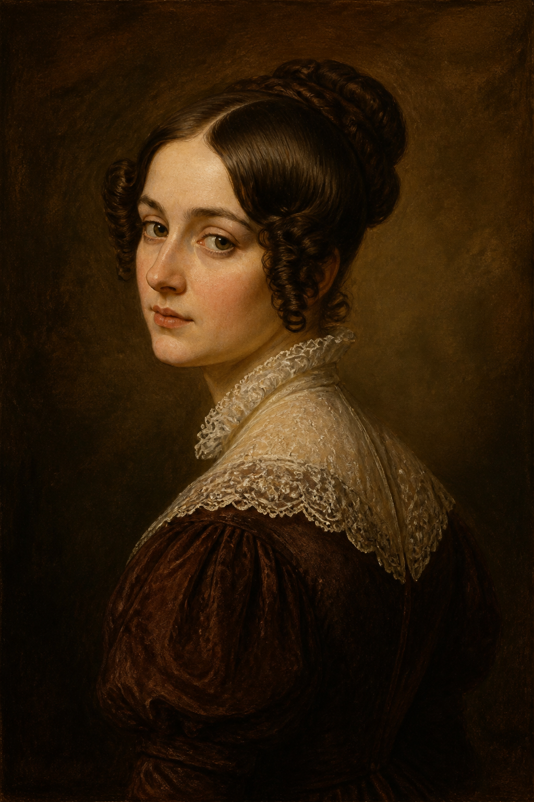
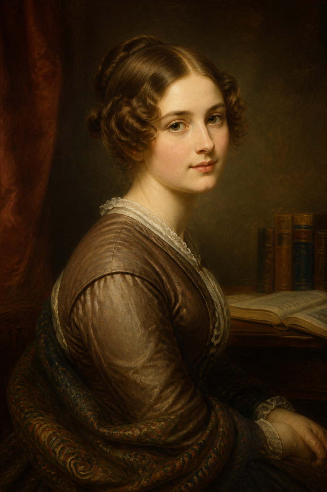
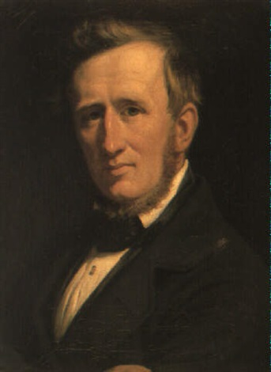
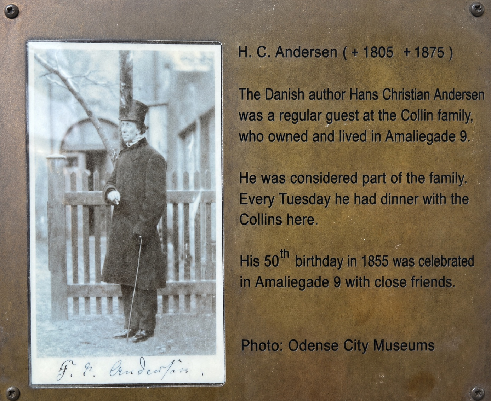
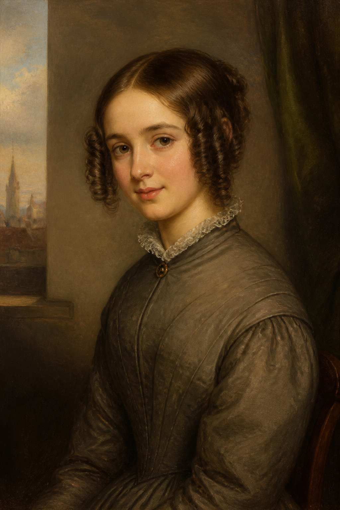
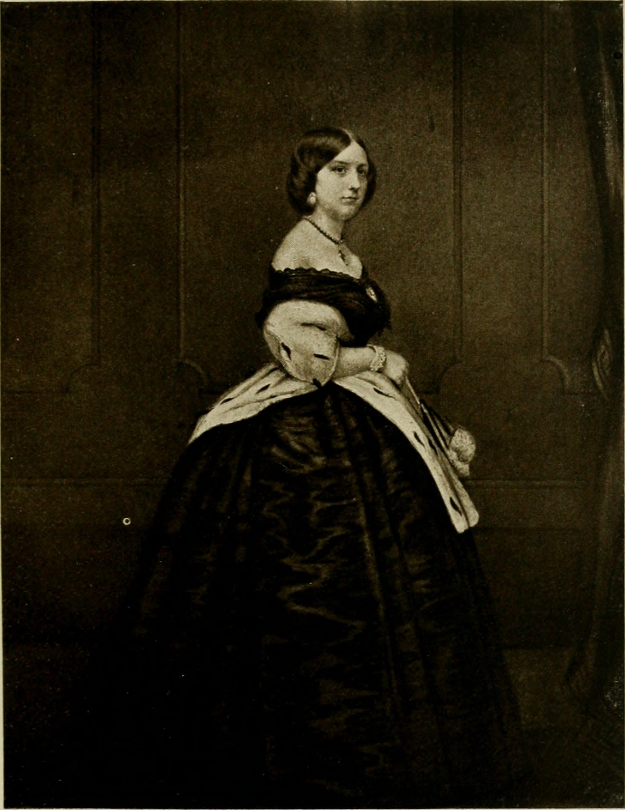
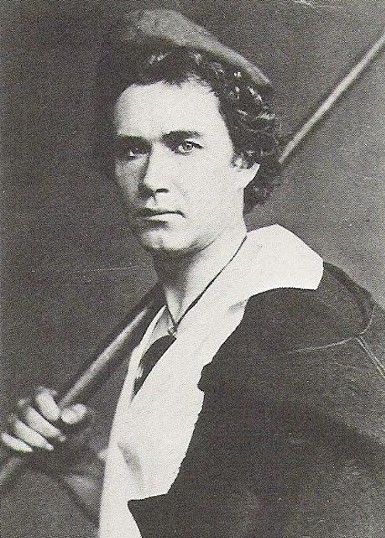

七段深淺不一的心事
依安徒生初識或情感最濃烈的時間排序，橫跨他 25 歲到近 60 歲的人生。其中露薏絲·柯林、蘇菲·奧斯特兩位查無可公開轉載的真實畫像來源，肖像為 AI 依時代服飾風格繪製的示意圖。

初戀・命中錯過 AI 示意繪製，非真實畫像安徒生 25 歲時在腓特烈西亞認識商人之女莉波格，一見傾心，可惜她早已與另一名男子訂婚。這是安徒生公開紀錄裡第一段刻骨銘心的單戀。
終其一生，安徒生始終沒有放下這段感情——1875 年他過世時，貼身佩戴的一個小布袋裡，裝的正是莉波格多年前寫給他的一封信，直到嚥氣那一刻都還帶在身上。

青春的暗戀 AI 示意繪製，非真實畫像露薏絲是安徒生恩人約拿斯·柯林最小的女兒，也是他最濃烈的一段男性情感對象——愛德華·柯林——的親妹妹。1832 年安徒生開始對她動心，寫了不少私密書信與熱情洋溢的情詩向她表白，但她始終沒有回應這份感情。
求愛落空後，安徒生轉而試圖贏得她哥哥愛德華的心，把他當作可以傾訴一切的「confidant」——露薏絲後來嫁給他人，改名 Louise Lind；而安徒生對柯林家「兄妹皆曾心動」的模式，也讓後世研究者注意到他對整個柯林家族近乎依戀式的情感連結。

灼熱的愛戀・畢生未解 Wilhelm Marstrand 繪, 1855 · Wikimedia Commons 公有領域柯林家的長子，安徒生一生情感濃度最高、持續最久的對象。兩人自青年時期相識，安徒生曾提議以較親密的「你（du）」互稱，被柯林婉拒；他也曾懇求柯林以兄弟相待，卻始終得不到對等的回應。
1836 年，柯林決定與一名女性結婚，安徒生深受打擊，自我放逐至菲因島，陷入低潮——隔年寫下的〈人魚公主〉，德國學者米夏埃爾·馬爾認為正是這段無望愛情的隱喻重述：一個犧牲一切、卻始終無法被愛人真正看見的靈魂。
這段感情安徒生用一生去經營：即使柯林始終拒絕以「你（du）」相稱，他仍不斷追求這段關係直到終老。安徒生過世時立下遺囑，將愛德華·柯林指定為他唯一的財產繼承人——這是安徒生留給世界最後、也最沉默的一句告白。
「誰也沒有這樣痛擊過我，誰也沒讓我流下更多眼淚——但我愛誰，都不像我愛你這樣多。」 安徒生致柯林信件，1835 年


不敢說出口的自卑 AI 示意繪製，非真實畫像物理學家漢斯・克里斯汀・厄斯特（電磁學先驅）之女，比安徒生小 16 歲。安徒生對她一見傾心，卻始終把這份感情藏在心底——因為他自覺出身貧寒、配不上這樣的書香門第，不是「好對象」。
1837 年 12 月，安徒生得知蘇菲已與法律系畢業生 Fritz Dahlstrøm 訂婚，當天在日記裡只留下一句：「今天蘇菲訂婚了。」他把這份無疾而終的暗戀寫進詩作〈但願我有錢！〉（Gid jeg var riig!），暗指若自己出身富裕，結局是否會不同。

求婚被拒的知音 約 1851 年攝 · Wikimedia Commons 公有領域被譽為「瑞典夜鶯」的知名歌劇女伶，是安徒生對外公認最著名的單戀對象。1843 年，安徒生正式向她求婚，這是他一生中少數幾次真正跨出「只敢暗戀」那一步的行動。
林德婉拒了他，始終只把安徒生當作兄長或摯友，未曾以同等的情感回應——但兩人仍維持了長期的友誼，安徒生也創作童話〈夜鶯〉向她致意。
 跨越階級的忘年情誼
Richard Lauchert 繪, 1855 · Wikimedia Commons 公有領域
跨越階級的忘年情誼
Richard Lauchert 繪, 1855 · Wikimedia Commons 公有領域
薩克森－威瑪－艾森納赫的世襲公爵（後為大公），安徒生歐遊時結識的年輕貴族。與柯林不同，安徒生對他的熱烈情感這次得到了正面回應——兩人維持了長達三十餘年的深厚友誼與頻繁書信往來。
卡爾·亞歷山大後來成為安徒生晚年最重要的贊助人與精神寄託之一，安徒生多次受邀造訪威瑪宮廷，被視為座上賓。這段關係跨越了平民與貴族的巨大階級鴻溝，也是少數讓安徒生感到「被珍視」的長期情感連結。

暮年最後的心動 Henrik Wickmann 攝, 1860 · Wikimedia Commons 公有領域丹麥皇家劇院的首席男舞者，安徒生 1857 年在巴黎結識他時，已年過半百，夏爾夫則是 21 歲的青年舞者。1860 年兩人在巴伐利亞的奧伯拉瑪高意外重逢後，感情迅速升溫。
安徒生 1861–1862 年的私人日記中，記錄了與夏爾夫親吻、擁抱等親密時刻的片段，兩人也互贈生日禮物、書信往來（原信已佚失）。他曾形容夏爾夫是「一隻善意翩翩飛舞的蝴蝶」。1863 年後，夏爾夫的感情轉向女性，這段關係逐漸淡去，他後來也於 1874 年結婚。